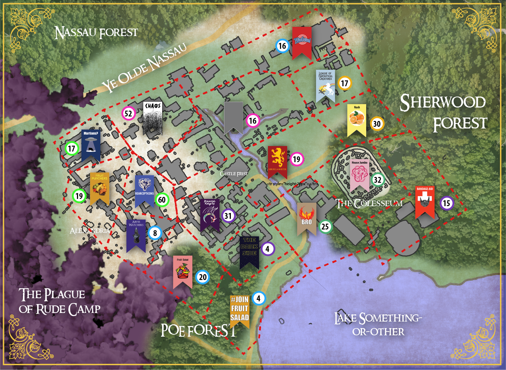

Overview
War has come to iD Tech Camps Princeton. The chaos began when the Mad King and Grand Wizard Severus Mossybeard the Wise declared that wakeup would henceforth be set at a firm 6:30am. Unable to cope with the lack of sleep and made distraught by further unreasonable demands, the lords of the great houses became doubtful of their king’s sanity. Battle lines were drawn across the once unified empire and whispers of uneasy alliances can be heard in the halls of Castle Frist. With the current monarchy on the brink of shattering it will be up to the people of iD Tech Princeton, as well as the strategic maneuvers of their lords and ladies, to determine the fate of this great kingdom.
Lay of the Land
Click to Enlarge
{kind=link}
Wednesday PM
In the wake of territories changing and factions falling, power shifts across the lands of iD Princeton. With
the winds of winter will come a new reign, but all the remaining forces have their own vision.
House Jumbo and the House of Bro have allied their forces to march on the noble House Lannister in an attempt to stifle
Jaime’s rise to power. For the millions that know the faces of the Lannisters, whether in fear or love, none
are aware of the Faceless Men who answer the call to fortify House Lannister. Together, the Faceless Men and
House Lannister are formidable, but not unbeatable. When the smoke of battle clears, their armies are gone,
House Jumbo and House of Bro are victorious; But the Faceless Man and Jamie Lannister have retreated to lick
their wounds.
Wielding the largest army iD Princeton has ever known, Lord Bolt sends the Bearcepticon forces to put an end
to the Lich King Shmog’s attempt to bring fire and death to the land.The Sorceress of Bad Stuff, Essbee
fortifies the Dark Lord, though it’s too little too late. As Lord Bolt is delivering the final blow, Shmog
and Essbee vanish faster than a flash of lightning from the battlefield to regroup and resurrect their fallen forces. The darkness gathers.
Finally, on the other side of the land, Chaos has formed a plan -or something that resembles it. The Fruit
Punchers, led by the royal Sunny D, are seized in the night. Though they fought valiantly, they cannot punch
Chaos quite like they can fruit. By morning light, they are defeated and all that is left of their land is a
pit.
The war for the throne has changed. Important lives have been lost in the telling of the story of the next great
ruler of iD Princeton. Evil has risen, and good has answered the call to resist it. Though the rest remains
untold, you can still play a part. Pledge your loyalty and lend you aid to your chosen king of iD Princeton
Fantasy Week.
Wednesday AM
The game is afoot and the tides of war are shifting. In the north, House Lannister put out a kill order for
Iron and the MetalHeads. (Rumor has it that the Faceless Men were paid a hefty fee to carry out this request.)
Closeby and spotting a chance to sow CHAOS, Potus and the State of Chaos lent their aid in this assassination.
Together the Lannister army and their allies totaled 8,300 brave men and women which was a more than adequate
number to compete against Iron’s 2,000 invigorated metal-knights. Unaware and unprepared, Iron's forces were
swiftly eradicated. Iron himself was felled without a single glint of fear in his eyes.
Simultaneously in the east, Hawke Mage of Bandage-Aid buried Arrow in a monstrous pile of 2900 BAND-AIDs. Unable
to free themselves, Arrow and his 900 merry men drowned in a sea of Health and Safety. This move completed the
elimination of both Iron and his last ally, decimating the old regime.
In the south the forces of Fire & Death & Darkness aligned. Shmog and his Death Knights as well as the Sorceress
of Badstuff swiftly cut a swathe through all the worst kinds of fruit. Melons, Cantaloupes, and Starfruit met their
demise en masse. At the sight of his lands ablaze Mangoes rallies his noble steed Ape in an attempt to defend his
fruit. Bringing 2000 to aid Mango(e)s already formidable force of 4100, it was still not enough. 6100 Death
Knights imbued with the Power of Friendship and 2000 Sorcerers/esses wielding eldritch magics marched on the
Banana gates and knocked them down with ease. The lands of Fruitopia are left in ruins, but Mangoes and his steed
live to fight another day.
Tuesday PM
In the morning of tuesday it was the Abyss Watchers who chose to strike. They sent their full force north
towards the well defended encampment of the Fruit Punchers. While Sunny D fought bravely, she was no match
for the giant Wolf of Farron and her fortifications were annihilated. On the run and outnumbered she retreated
to her war camp with Hatter close at her heels.
As Hatter turned around to cheer on his forces, invigorated by his sound victory, his expression changed to one of
horror. His home, Forbes Village, was ablaze and the culprit was none other than Mango(e)s. Man certainly
did go to war. Fruit Salad had seized the opportunity to assault the Abyss Watchers’ undefended territory.
Unable to complete his siege, Hatter had no choice but to retreat. Swinging back to rally at Forbes he was
barely able to repel the ensuing attack. Mango(e)s had gotten what he came for, leaving Hatter and his army
devastated.
While both the Fruit Punchers and the Abyss Watchers remain in the game, it is clear that they are not as strong as
they once seemed. The west is on fire and ripe for the taking. Will the campers aid the flailing factions
of the Fruit Punchers and Abyss Watchers? Will they join with their surrounding rivals and assist in
completing Mango(e)s sinister plot for world domination? Or will they bring their banners elsewhere entirely?
Tuesday AM
The Mad King Severus Mossybeard took things too far on Monday night. With Shmog and his Dracoliches marching on the
capital to take the throne, the Grand Wizard became desperate. He made threats to make wake up even earlier, raise
ticket taxes, and ban video games for the rest of the week. As the Death Knights drew closer to his keep the Grand
Wizard began his most insane plan yet, destroying every laptop with his Wildfire_Virus.exe. His friend and most loyal
Kingsguard, Jaime Lannister, watched on as his Mad King prepared to destroy everything the campers of iD Tech Princeton
had worked to build. The night came to a climactic close with Shmog bursting through the keep doors, sword in hand, ready
to slay the king and take over camp. Severus was prepared as he stood before Shmog with his hand on the button. He
claimed he would annihilate the projects and delete all backups. The Lich King, while powerful enough to defeat his opponent,
did not think it would be worth the great loss and found himself at an impasse. Before he could make his next move,
the Mad King was felled by his Kingsguard Jaime and the projects were left unharmed. Jaime earned the name Kingslayer
but truly believes that his decision was necessary for the good of the kingdom. When the dust of battle settled it was
clear that The Lich King’s goal to take over the Apothecary (south of Frist) was successful. House Lannister now controls
Castle Frist and is working to restore order to the realm. Hear Me Roar.
While Castle Frist lay under siege, overtaken by chaos and destruction, a powerful alliance is being built between the
Bearcepticons, Toon Squad, and House Jumbo. They have chosen to remain passive for now, observing the other houses and
waiting for the right time to join the fray.
The Great Wolf of Farron has joined forces with The Fallen Retro Emperor and together they hope to claim the throne
for themselves. Dash was once a great ruler and he believes this alliance will allow him to take yet another throne.
Their forces are geographically separated and they have decided to watch the war rage on from afar… for now.
The forces of the east led by Nash (he’s a good guy) and Stitch have decided to fortify their borders in hopes that
the storm of battle will pass. It seems the two have also recruited the help of a western mercenary group known as
the Fruit Punchers, a slightly less passive faction that seeks only to bruise as many fruits as possible. Will Mango(e)s
and Ape indeed be punched or will these great houses be brought into the larger melee?
Vote wisely young campers. The fate of the kingdom lays in your hands.